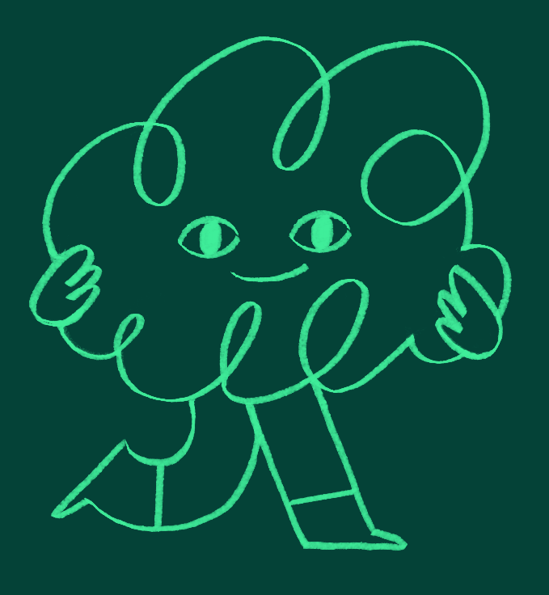
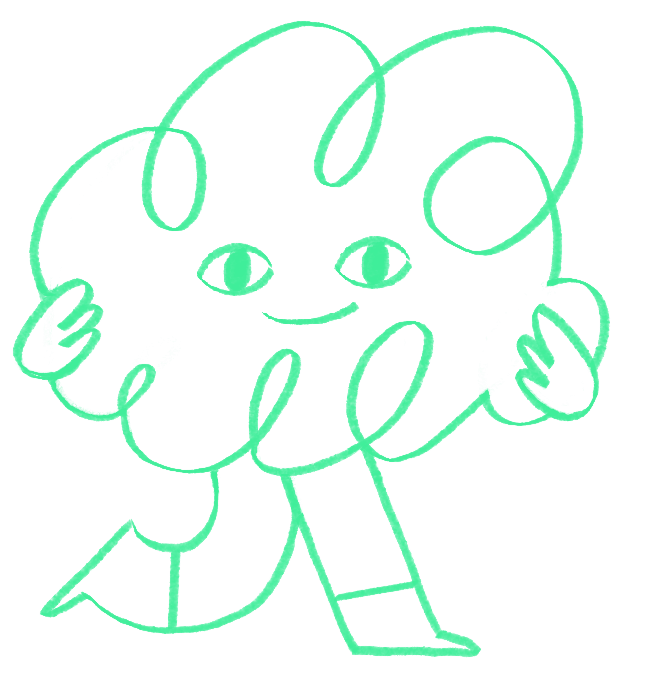
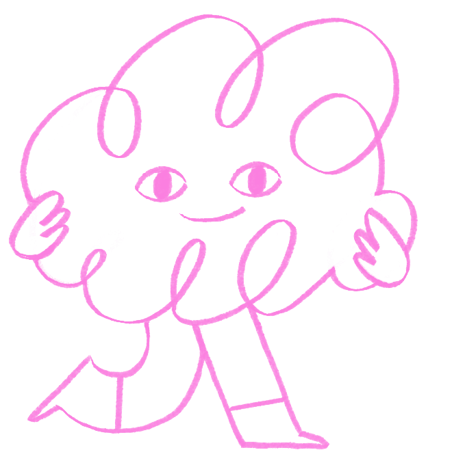
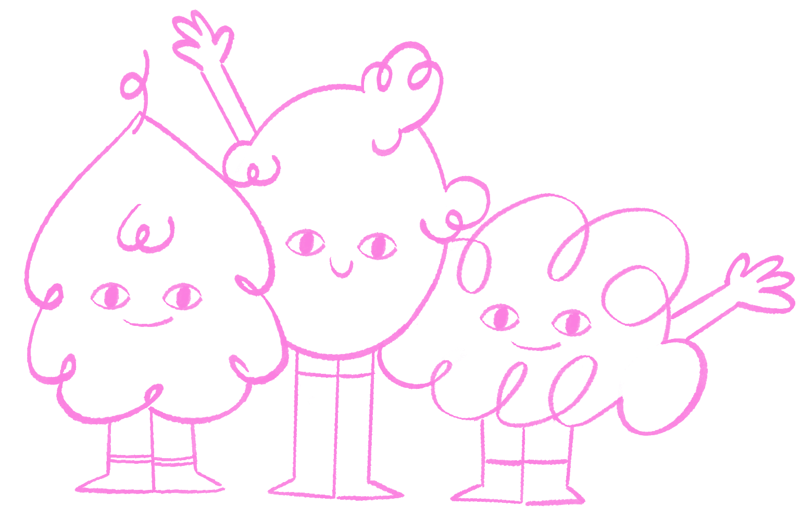
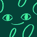

IL BRAND
Tutto quello che serve per restare riconoscibili: logo, colori, caratteri, immagini, componenti e voce. Questa pagina usa lo stesso style.css del sito, quindi è sempre aggiornata. Se qualcosa non è qui, chiediamoci se serve davvero prima di inventarlo.
Logo
Il marchio ha tre pezzi: la mascotte disegnata a mano (il nostro abitante del bosco), il wordmark ilbosco in minuscolo e rosa che chiude ogni pagina, e lo slogan E ALLORA VAI NEL BOSCO. che fa da logo nel nav. Nel testo il nome si scrive sempre ilBosco: B maiuscola, tutto attaccato.






Wordmark del footer

Sì
- Slogan chiaro sul verde, scuro sul chiaro (vista Perché).
- Nel nav lo slogan è alto 13px; lascia che sia la larghezza ad adattarsi.
- La mascotte vive sul verde o sul bordeaux, mai su foto.
No
- Ricolorare, deformare o ruotare logo e mascotte.
- Scrivere “Il Bosco”, “il bosco” o “ILBOSCO” nel testo corrente.
- Mettere il wordmark su immagini o fondi rosa.
Colori
Cinque colori. Il verde scuro è casa: quasi tutto succede lì sopra. Il verde menta è la voce (titoli, accenti, hover), il rosa è l'azione, il bordeaux chiude la pagina. Nel codice usa sempre i token, mai l'esadecimale.
Palette principale
--color-bg
Fondo di tutte le pagine, testo sulle superfici menta.
--color-heading
Titoli display, bordi dei chip, testate, hover di link e frecce.
--color-body
Testo corrente e etichette del nav; fondo della vista Perché.
--color-chip-bg
Azioni: pulsante di ricerca, badge del paese. Testo del footer.
--color-footer-bg
Footer, segnaposto delle immagini, testo sul rosa.
Di supporto
--color-chip-bg-hover
Solo stato hover del rosa.
--color-perche-text
Testo sulla vista chiara Perché.
color-mix(… --color-body 30% …)
Righe sottili e bordi: carta in trasparenza, mai un grigio nuovo.
Abbinamenti consentiti
Questi sono gli unici accostamenti testo/fondo che usiamo. Il rapporto di contrasto è calcolato dal vivo (AA richiede 4.5 per il testo normale, 3 per i titoli grandi).
No
- Menta sul fondo chiaro: non si legge (resta solo come hover).
- Rosa e menta vicini come testo/fondo.
- Nuovi grigi, sfumature o gradienti: le trasparenze si fanno con la carta.
Caratteri
Tre famiglie, tutte ospitate in locale in fonts/ (niente Google Fonts, niente richieste a terzi). Akshar grida, Instrument Sans racconta, JetBrains Mono etichetta.
--font-display
E ALLORA VAI NEL BOSCO.
ABCDEFGHIJKLMNOPQRSTUVWXYZ 0123456789 àèéìòù
Titoli hero, nomi dei tool, titoli di categoria e del Perché. Sempre bold, interlinea 1, spesso in maiuscolo.
--font-body
Una lista curata di alternative digitali.
Niente login. Niente pubblicità. Niente prediche. Perché ci piace: ABCDEFGHIJKLMNOPQRSTUVWXYZ abcdefghijklmnopqrstuvwxyz 0123456789
Testo corrente, card, titoli degli articoli (bold). Interlinea 1.43–1.65.
--font-mono
[→] Perchè? [X]
IL POST · 3 GIUGNO 2026 · AGGIORNATO: GENNAIO 2026 · CIAO@ILBOSCO.CO
Chip, nav, date, testate, footer. Piccolo (0.6875–0.8125rem) e funzionale: è il carattere delle etichette, mai dei paragrafi lunghi.
Scala
| Elemento | Carattere | Dimensione | Peso | Interlinea |
|---|---|---|---|---|
| Titolo hero | Akshar | clamp(3.6rem, 14.4vw, 9rem) | 700 | 1 |
| Titolo di categoria / pagina | Akshar | clamp(2.6rem, 10.4vw, 4.55rem) | 700 | 1 |
| Nome del tool | Akshar | 3.125rem | 700 | 1 |
| Titolo articolo | Instrument Sans | 1.375rem | 700 | 1.25 |
| Testo corrente | Instrument Sans | 1rem | 400 | 1.65 |
| Testo delle card | Instrument Sans | 0.875rem | 400 | 1.43 |
| Chip, nav, footer | JetBrains Mono | 0.75rem | 400 | 1 |
| Date | JetBrains Mono | 0.6875rem, opacità 0.55 | 400 | 1 |
Spazi
Scala a base 8. Margine laterale (--gutter) 16px su mobile, 48px da 768px, 64px da 1200px. Colonne di testo strette: 680px per leggere, 814px per i risultati.
Movimento
Un solo easing, --transition (300ms, morbido). Le entrate in pagina salgono di 20px e compaiono in 600ms, a scaglioni. La bolla e la mascotte usano un piccolo rimbalzo. Tutto si spegne con prefers-reduced-motion.
Immagini
Bianco e nero, grana a puntini, formato 3:2 (ritagliato 5:3 nelle card). Mai foto o screenshot degli editori, mai immagini linkate da altri siti. Per dare lo stile a qualsiasi immagine: python3 articoli/stylize.py <sorgente> <id>. Se l'immagine non c'è, il segnaposto bordeaux va benissimo.


Componenti
Pochi pezzi, sempre gli stessi. Angoli: pillola (100px) per chip e ricerca, vivi (0) per immagini e card. Specifiche complete in docs/design-system.md.
Chip
Ricerca
Bolla, badge, etichette
Voce
Scriviamo in italiano, alla prima persona plurale, come un gruppo di amici che ne sa qualcosa e te lo dice senza farti la morale. Abbiamo opinioni, non prediche.
Sì
- Corto. Si legge di sfuggita: due o tre fatti, il resto si taglia.
- “Noi”: ci piace, lo usiamo, ve lo consigliamo.
- Onesti sui limiti (“Occhio a:”), con date quando i fatti invecchiano.
- Etichette del nav e dei comandi tra parentesi quadre, in mono.
No
- “Queste aziende sono il male.” Niente toni da crociata.
- Gergo tecnico senza spiegazione, punti esclamativi, emoji nel testo.
- Copiare testo degli editori nei commenti.
Esempi
[✓] COSÌUn cambio di default che dice molto: le alternative europee esistono e qualcuno comincia a sceglierle sul serio.
[X] NON COSÌÈ ORA DI DIRE BASTA alle Big Tech che ci spiano!!! Passa subito a questa app rivoluzionaria 🚀
Misure dei testi
| Campo | Lunghezza |
|---|---|
| Descrizione del tool | Max 2 paragrafi, ~350 caratteri. Il primo dice da solo perché ci piace. |
| Occhio a (caveat) | 1–2 frasi, ~200 caratteri. Solo il limite che cambia la scelta. |
| Modello di business | Una frase. |
| Perché cambiare | 2–3 frasi, ~200 caratteri. |
| Commento a un articolo | Max ~220 caratteri. |